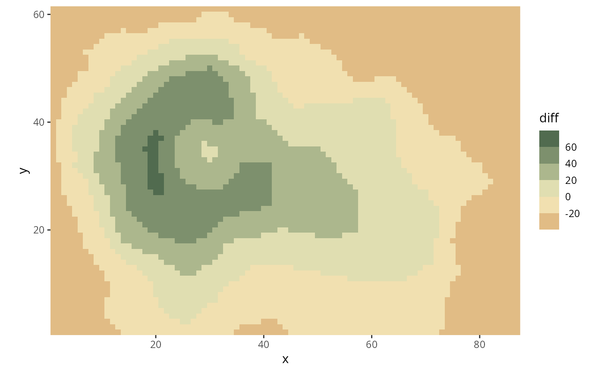

HCL-Based Binned Flexible Diverging Scales for ggplot2
scale_colour_binned_divergingx.RdBinned ggplot2 color scales using the color palettes generated by divergingx_hcl.
scale_colour_binned_divergingx(
palette = "Geyser",
c1 = NULL,
c2 = NULL,
c3 = NULL,
l1 = NULL,
l2 = NULL,
l3 = NULL,
h1 = NULL,
h2 = NULL,
h3 = NULL,
p1 = NULL,
p2 = NULL,
p3 = NULL,
p4 = NULL,
cmax1 = NULL,
cmax2 = NULL,
alpha = 1,
rev = FALSE,
mid = 0,
na.value = "grey50",
guide = "coloursteps",
n_interp = 11,
aesthetics = "colour",
...
)
scale_color_binned_divergingx(
palette = "Geyser",
c1 = NULL,
c2 = NULL,
c3 = NULL,
l1 = NULL,
l2 = NULL,
l3 = NULL,
h1 = NULL,
h2 = NULL,
h3 = NULL,
p1 = NULL,
p2 = NULL,
p3 = NULL,
p4 = NULL,
cmax1 = NULL,
cmax2 = NULL,
alpha = 1,
rev = FALSE,
mid = 0,
na.value = "grey50",
guide = "coloursteps",
n_interp = 11,
aesthetics = "colour",
...
)
scale_fill_binned_divergingx(..., aesthetics = "fill")Arguments
- palette
The name of the palette to be used.
- h1, h2, h3, c1, c2, c3, l1, l2, l3, p1, p2, p3, p4, cmax1, cmax2
Parameters to customize the scale. See
divergingx_hclfor details.- alpha
Numeric vector of values in the range
[0, 1]for alpha transparency channel (0 means transparent and 1 means opaque).- rev
If
TRUE, reverses the order of the colors in the color scale.- mid
Data value that should be mapped to the mid-point of the diverging color scale.
- na.value
Color to be used for missing data points.
- guide
Type of legend. Use
"coloursteps"for color bar with discrete steps.- n_interp
Number of discrete colors that should be used to interpolate the binned color scale. For diverging scales, it is important to use an odd number to capture the color at the midpoint.
- aesthetics
The ggplot2 aesthetics to which this scale should be applied.
- ...
common binned scale parameters: `name`, `breaks`, `labels`, and `limits`. See
binned_scalefor more details.
Details
Available CARTO palettes: ArmyRose, Earth, Fall, Geyser, TealRose, Temps, Tropic.
Available ColorBrewer.org palettes: Spectral, PuOr, RdYlGn, RdYlBu, RdGy, BrBG, PiYG, PRGn, RdBu.
If both a valid palette name and palette parameters are provided then the provided palette parameters overwrite the parameters in the named palette. This enables easy customization of named palettes.
Examples
library("ggplot2")
# volcano plot (difference from mean height)
nx = 87
ny = 61
df <- data.frame(diff = c(volcano) - mean(volcano), x = rep(1:nx, ny), y = rep(1:ny, each = nx))
ggplot(df, aes(x, y, fill=diff)) +
geom_raster() + scale_fill_binned_divergingx(palette = "Fall", rev = TRUE) +
coord_fixed(expand = FALSE)

# adapted from stackoverflow: https://stackoverflow.com/a/20127706/4975218
# generate dataset and base plot
set.seed(100)
df <- data.frame(country = LETTERS, V = runif(26, -40, 40))
df$country = factor(LETTERS, LETTERS[order(df$V)]) # reorder factors
gg <- ggplot(df, aes(x = country, y = V, fill = V)) +
geom_bar(stat = "identity") +
labs(y = "Under/over valuation in %", x = "Country") +
coord_flip() + theme_minimal()
# plot with diverging scale "Geyser"
gg + scale_fill_binned_divergingx(palette = "Geyser", n.breaks = 6)